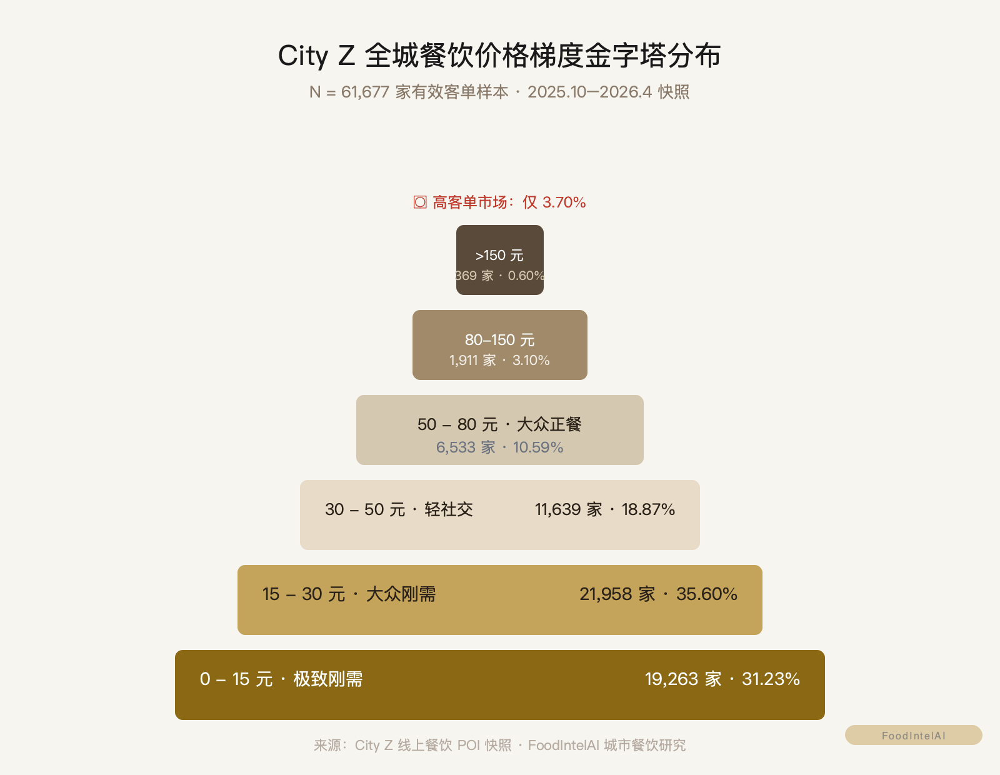
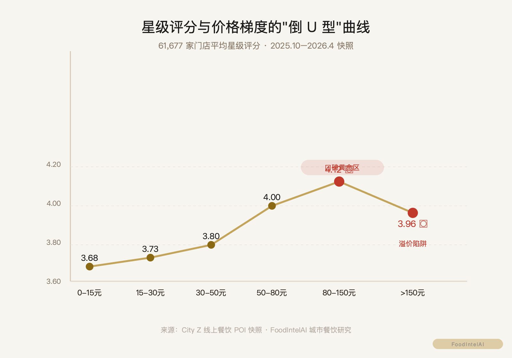

心理客单与体验溢价：一座城市 10 万+ 餐饮门店样本下的价格梯度与价值定位真相
在餐饮商业决策中，"价格"常被简单等同于"成本加成"或"竞品对标"。大多数餐饮创业者默认：定价高就意味着高品质、高毛利；定价低就只能做低端薄利。
然而，将北方某特大城市（代号 City Z）的 10 万+ 海量门店样本数据（有效价格样本 N = 61,677 家）引入价格密度函数（PDF）与评分归因模型演算后，数据展现出的客单结构极其硬核：
本文将从全城价格梯度的金字塔结构、150 元溢价陷阱与价值凹陷、体验四维归因重构、渠道价格挤压四个维度，剥离定价幻想，彻底拆解城市餐饮的价格真相。
注：为保持分析的通用性与严谨性，文中城市名、行政区划名称及商业品牌名称均已进行结构化代码掩码处理（City Z，District A~D 等）。
在 City Z 具备有效客单价数据的 61,677 家餐饮门店大盘中，全城中位客单价仅为 21.0 元，平均客单价为 30.5 元。
按客单价区间划分，城市餐饮呈现出极其悬殊的"下沉金字塔"分布：

150元 0.60%">| 客单价区间 | 门店数量（家） | 大盘占比 | 累积占比 | 梯队特征与商业实质 |
|---|---|---|---|---|
| 0 - 15 元 | 19,263 | 31.23% | 31.23% | 极致周转区（单品粉面、平价饮品、档口快餐） |
| 15 - 30 元 | 21,958 | 35.60% | 66.83% | 城市绝对消费基座（标准快餐、品质面馆） |
| 30 - 50 元 | 11,639 | 18.87% | 85.70% | 轻社交过渡带（小份酸菜鱼、轻量烧烤/火锅） |
| 50 - 80 元 | 6,533 | 10.59% | 96.29% | 社交入门区（地方菜聚餐、主流火锅、烤鱼） |
| 80 - 150 元 | 1,911 | 3.10% | 99.40% | 高品质体验区（精致正餐、中高端火锅） |
| > 150 元 | 369 | 0.60% | 100.00% | 极度稀缺区（高端商务、特定非标体验） |
1. 66.83% 的"30 元封顶线"：全城近三分之二的餐饮门店客单价严格锁定在 30 元以内。这构成了特大城市普通居民日常能量补充的心理安全边界。
2. 85.70% 的"50 元大众线"：客单价在 50 元以内的门店累计占比高达 85.70%。这意味着任何主打"高频/快餐"属性的品牌，一旦客单价突破 50 元，就会瞬间脱离 85% 的主流客群基座，陷入客流断崖。
3. 3.70% 的高端天花板：客单价超过 80 元的门店（品质正餐与高端体验）全城仅有 2,280 家，占比仅仅 3.70%；突破 150 元的极高端门店更是不足 0.60%（仅 369 家）。在二线特大城市，高客单市场并非汪洋大海，而是极度窄小的特定小众走廊。
按常理推断，店家卖得越贵，用料与环境越好，顾客的星级评分和满意度应该越高。
然而，将 61,677 家门店按价格梯度交叉对比其平均星级评分与平均评论数后，一条极其显著的"反常曲线"显现出来：

| 客单价区间 | 门店样本（家） | 平均客单价（元） | 平均星级评分 | 平均评论数（条） | 体验与满意度评价 |
|---|---|---|---|---|---|
| 0 - 15 元 | 19,263 | 11.4 | 3.68 | 51.0 | 刚需低价区，低预期，评分偏低 🔵 |
| 15 - 30 元 | 21,958 | 21.5 | 3.73 | 116.0 | 大众刚需，评分随价格平稳提升 🔵 |
| 30 - 50 元 | 11,639 | 39.4 | 3.80 | 249.5 | 轻社交区，品质与性价比兼顾 🔵 |
| 50 - 80 元 | 6,533 | 62.0 | 4.00 | 645.3 | 正餐社交门槛区，口碑爆发点 🔵 |
| 80 - 150 元 | 1,911 | 99.2 | 4.12 | 991.2 | 全市满意度与声量双高黄金区 🔵 |
| > 150 元 | 369 | 344.8 | 3.96 | 555.8 | "溢价陷阱"：评分大幅下挫 🔵 |
1. 80 - 150 元是全市的"口碑黄金区"：在此区间内，星级评分达到全城顶峰（4.12 分），平均评论数更是高达 991.2 条。这一梯队的餐厅（如精致火锅、品质正餐）凭借出色的食材、装修与服务，完美匹配了食客对于"社交/商务聚餐"的价值心理预期，产生了最强烈的正向声量堆积。
2. > 150 元的"价值负偏差（Value Deficit）"：当客单价从 80-150 元进一步攀升至 150 元以上（平均客单 344.8 元）时，星级评分却从 4.12 分断崖式下挫至 3.96 分，平均评论数也大幅缩水至 555.8 条。
3. 商业本质解构：在二线特大城市，当食客支付超过 150 元/人的高价时，其心理预期呈几何级数暴涨。此时，任何关于菜品味道、服务细节或性价比的微小瑕疵，都会被无限放大。大多数高端餐厅的物理交付能力（菜品与服务）并未跟上其价格涨幅，导致食客产生强烈的"不值这个价"的心理落差，直接引发中差评倾泻。
通过对数据集中拆解出的口味、环境、服务三大细分维度评分进行交叉分析，我们可以清晰看到食客在不同客单价区间关注点的物理重置：
| 客单价区间 | 平均口味分 | 平均环境分 | 平均服务分 | 细分维度得分排序 | 消费者底层决策逻辑 |
|---|---|---|---|---|---|
| 0 - 15 元 | 3.678 | 3.670 | 3.674 | 口味 > 服务 > 环境 | 极低客单，只看"好不好吃/饱不饱" |
| 15 - 30 元 | 3.731 | 3.726 | 3.727 | 口味 > 服务 > 环境 | 刚需快餐，口味略微领先 |
| 30 - 50 元 | 3.800 | 3.794 | 3.795 | 口味 > 服务 > 环境 | 性价比轻正餐，口味依然是核心 |
| 50 - 80 元 | 4.004 | 3.995 | 3.995 | 口味 > 环境 ≈ 服务 | 社交入门，三大维度开始齐平 |
| 80 - 150 元 | 4.128 | 4.139 | 4.123 | 环境 > 口味 > 服务 | 环境得分反超口味，买单空间与氛围 |
| > 150 元 | 3.966 | 3.997 | 3.975 | 环境 > 服务 > 口味 | 口味得分垫底，极致看重隐私与场景 |
餐饮渠道（堂食团购 vs 线上外卖）对客单价与经营资产有深刻的挤压作用。
我们将 61,677 家门店按外卖渗透与团购渗透交叉划分为四类经营模式，数据如下：
| 渠道经营模式 | 涉及门店数（家） | 平均客单价（元） | 中位客单价（元） | 平均星级评分 | 平均评论数（条） | 渠道挤压与资产特征 |
|---|---|---|---|---|---|---|
| 纯线下传统模式（无外卖，无团购） | 15,091 | 30.5 | 22.0 | 3.63 | 56.1 | 数字化失语区，声量极低 🔵 |
| 纯堂食促销模式（无外卖，有团购） | 16,655 | 39.8 | 28.0 | 3.79 | 267.5 | 典型正餐，靠团购拉动客流 🔵 |
| 纯外卖履约模式（有外卖，无团购） | 7,980 | 22.4 | 18.0 | 3.63 | 38.9 | 客单价高度压缩，声量极低 🔵 |
| 外卖+团购双轮模式（有外卖，有团购） | 21,951 | 26.3 | 19.0 | 3.86 | 296.8 | 全城最高评分与最高声量 🔵 |
1. 纯外卖的"18 元客单锁死"：纯外卖模式（7,980 家）的中位客单价被强行压缩至 18.0 元，且平均评论数低至 38.9 条，评分仅 3.63 分。缺乏堂食体验支撑的外卖单轮驱动，极易陷入极致低价内卷。
2. 双轮驱动（外卖+团购）的资产最优化：占据 2.19 万家门店的"外卖+团购双轮驱动"模式，虽然中位客单价被平价拉低至 19.0 元，但其星级评分高达 3.86 分，平均评论数高达 296.8 条。双渠道同时运营能够最大化捕获全域流量，形成最稳固的线上评分与声量资产。
结合上述 6 万+ 门店的价格梯度、评分反常曲线与体验归因数据，我们为餐饮创始人总结出四条价格定位 SOP：
对于粉面、综合快餐、小吃等高频品类，必须将主力 SKU 的套餐组合控制在 15 - 30 元 黄金主战区。超越 30 元会显著降低复购频次，超越 50 元将失去 85% 的大盘客群。
如果是做精致正餐、特色火锅或品质烧烤，最推荐的定价区间是 80 - 150 元。数据证明，这是全城食客满意度最高（4.12 分）、评论积累最快（991 条）的体验黄金带。在此区间内，更容易实现"品质溢价与客方口碑"的双丰收。
切忌盲目追求高客单价。当定价突破 150 元/人时，必须重新审查自己的"物理交付能力"。如果环境、私密性与服务细节无法产生碾压级的优势，极易引发食客的"价值负偏差"，陷入低分与差评泥潭。
客单价低于 80 元：将 70% 的精力与成本投向口味研发、食材品质与出餐效率，装修保持干净整洁即可。
客单价高于 80 元：将更多预算与设计精力投向门店视觉、空间氛围、私密包间与服务仪式感。因为在此区间，环境得分是驱动顾客打出高分的第一要素。
餐饮经营中，定价从来不是简单的"成本乘以毛利率"，而是消费者心理预期与门店物理交付能力之间的一场精准博弈。
特大城市 6 万+ 门店的价格数据为我们揭示了冷酷的定价法则：
看清价格梯度的物理边界，匹配对应的体验重心，在正确的客单区间内做深做透，才是餐饮品牌在存量竞争时代最稳健的定价哲学。
数据样本：City Z（北方某特大城市）线上平台登记餐饮 POI 数据（108,350 条，2025.10-2026.4 快照）；价格梯度与评分归因分析基于其中 61,677 家具备完整有效客单价数据的门店样本。
分析方法：价格密度区间划分；星级评分及"口味/环境/服务"三维细分评分交叉回归；渠道（外卖/团购）渗入矩阵交叉分析。
脱敏与掩码说明：本文所有城市名称、行政区划名称及商业品牌名称均已进行结构化代码掩码处理；数据分析侧重于呈现城市餐饮市场的价格结构规律与消费偏好特征。
置信度标注：全城价格梯度分布与评分倒 U 型曲线基于全量样本复算（🔵 高置信）；渠道客单挤压与细分维度评分排序基于交叉分析（🔵 高置信）。
本文为行业研究与商业认知参考，不构成任何投资、经营或开店建议。